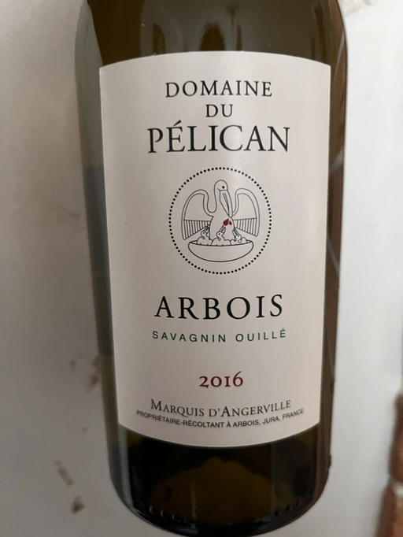

- Type
- White Still, Dry
- Producer
- Domaine du Pélican
- Vintage
- 2016
- Location
- France, Arbois AOC
- Grapes
- Savagnin
- Alcohol
- 12.5
- Sugar
- NA
- Price
- 1431 UAH, 1591 UAH
- Cellar
- N/A
Producer
Guillaume d’Angerville, current owner of famous Le Domaine Marquis d’Angerville from Bourgogne, decided to create a new project in Jura after tasting a single bottle - Tissot’s Chardonnay Arbois Les Bruyères 2005.
I tasted this bottle blind in a restaurant in Paris that I often go to. I always tell the sommelier to give me something blind and the only rule is that it has to be outside Burgundy. When he brought me this wine, I said, ‘You forgot the rule, you brought me a wine from Burgundy.’ And he said, ‘I am afraid you’re wrong.’
Guillaume d’Angerville
Ratings
2022-07-05 - 8.50
Complex and multilayered Savagning in a clean (e.g. no flor) style. Ouillé! Fried sunflower seeds, lemon peel, sesame, honey, used leaves of aged Bái Mǔ Dān. And what an incredible acidity despite its age. Almost perfect balance, long aftertaste, vigorous and flavourful. Great wine, yet hard to appreciate on a blind tasting. Something I would love to buy and taste again in five or ten years.
Tasted as part of Mixed Bag Vol. 1.
Related